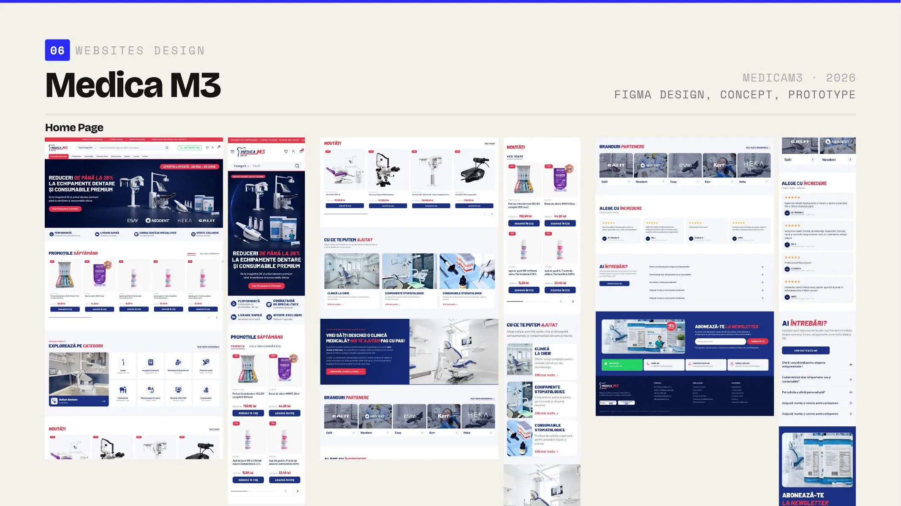

Category before product.
Help professional buyers locate the right family before asking them to compare detailed specifications.
Building a digital retention channel for a B2B dental retailer.

Email marketing, automated flows, commercial campaigns and ecommerce concept design.
MedicaM3 supplies dental clinics with products ranging from everyday consumables to professional equipment. Email previously played a limited role, while the large catalogue required technical clarity, immediate commercial information and professional trust.
I developed automated flows, evergreen communication and commercial campaigns covering product education, brand stories, weekly and monthly promotions, bestsellers and seasonal sales. I also created a new homepage concept to show how the storefront could become clearer and more contemporary.
The homepage concept reorganizes a dense professional catalogue around clearer categories, useful entry points and stronger product hierarchy. The old and new views make the proposed shift visible.
Unlike Capodopera’s editorial fashion approach, MedicaM3 communication is intentionally direct. Products, benefits and pricing need to be understood immediately by a specialist audience.
Automated flows, evergreen education, product-focused communication, weekly and monthly offers, bestsellers and seasonal sales give the brand a useful reason to return to the inbox.
Category comes before product when the audience is still orienting itself. Evidence comes before urgency when the purchase requires professional confidence. One hierarchy then adapts across storefront, campaign and email.
Help professional buyers locate the right family before asking them to compare detailed specifications.
Education and proof establish confidence; promotional language then has a clearer role.
Website, campaign and email formats reuse the same information priorities without becoming identical templates.